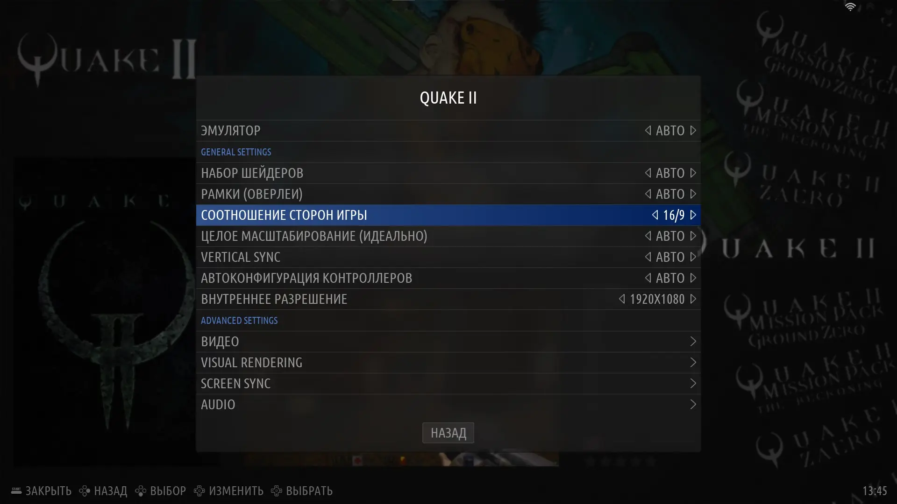
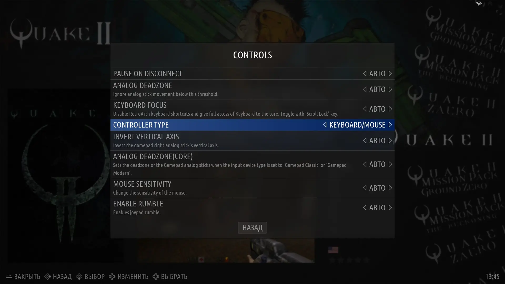

Рекомендации, проблемы и решения
В доп. настройках системы можно указать желаемое внутреннее разрешение, соотношение сторон, включить динамические тени, выбрать положение оружия и т.д.
Открываются настройки через "Select > Доп. настройки системы".
В "Управление (Controlls) > Тип устройства (Controller Type)" можно выбрать управление на геймпаде или на клавиатуре + мышь.(В Retroarch - "Управление > Привязка порта 1")
п.с. все эти настройки дублируют настройки в Retroarch, если в ES "что-то не работает", то меняйте там, предварительно сделав сохранение настроек для тайтла или для ядра.
п.с. все эти настройки дублируют настройки в Retroarch, если в ES "что-то не работает", то меняйте там, предварительно сделав сохранение настроек для тайтла или для ядра.

